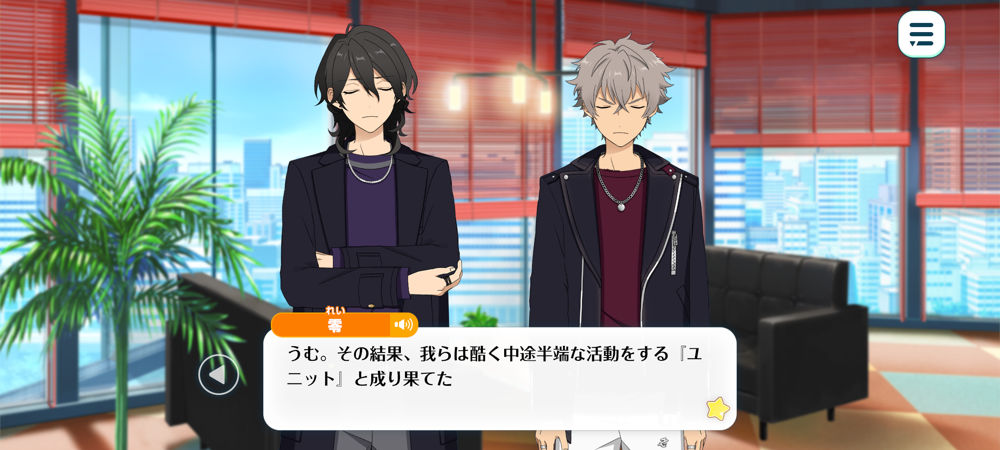
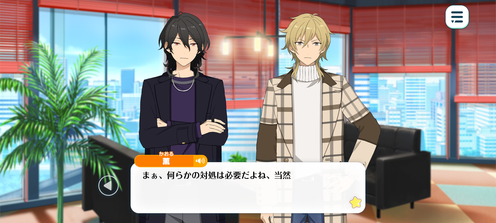
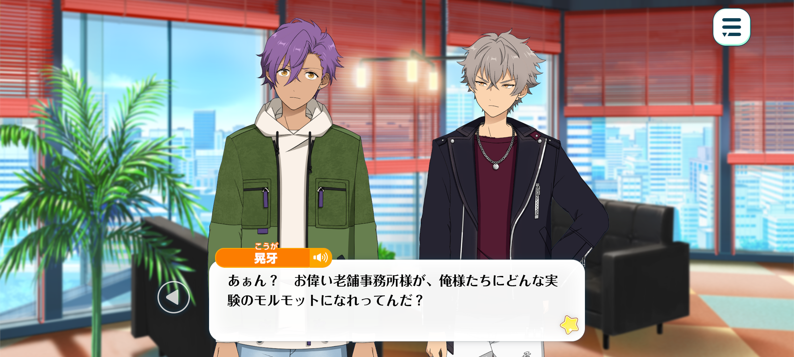
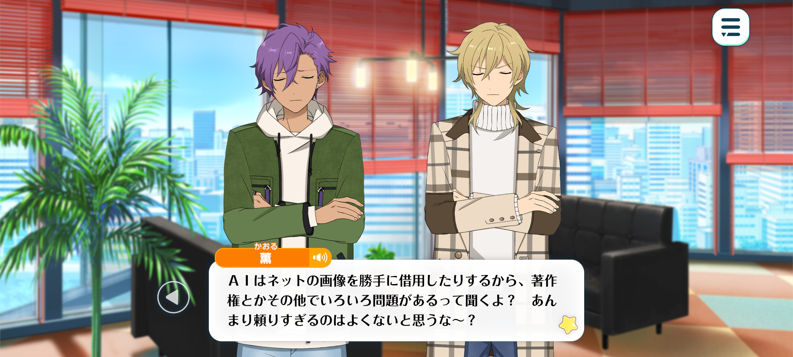

Flashback
BIOHAZARD – Chapter 2

Koga: Don't start lecturin' us on things we already know, like we're a buncha rookies!
I get it! I know all that! That's exactly why, even though I hate it more than anything, I'm still forcin’ myself to go on those stupid shows with a stupid grin plastered across my face!
Rei: And as a result, we've become a unit that lacks any clear sense of direction, caught somewhere between one identity and the other.
We haven't been able to commit wholeheartedly to either our hard-edged rock image or our more lighthearted variety-show persona. Meanwhile, units that specialise in one field or the other have steadily been overtaking us.
Of course, the economic downturn is partly to blame. But if you were trying to make the most of a limited household budget and decided to eat out, wouldn't you be more likely to choose a restaurant that does one particular thing exceptionally well over a family restaurant that offers a little bit of everything?
That, I believe, is what the people genuinely want, and the figures make that abundantly clear. After all, if you're paying the same amount, it's only natural to want the better deal.
And there's no denying that we're now falling behind the units that have devoted themselves to specialising in a particular area. The difference in the effort they've put in and the experience they've gained is becoming painfully obvious.
Koga: Hmph. It's just like that fable about the bat, isn't it? It kept trying to play both sides but in the end, neither the birds or the beasts wanted anything to do with it. [1]
Rei: Indeed. Things have not yet reached the point where the very foundations are beginning to crumble. However, if we allow this situation to go unaddressed…
Eventually, we'll find ourselves with nowhere left to turn, abandoned and utterly alone...
...at the very bottom of the industry, remembered as nothing more than a group of idols who simply couldn't make it in the world.
Koga: Th-then what are we supposed to do?! I get it now. We're finally backed into a corner with no way out, aren't we?!
But that doesn’t mean we’re gonna go down without a fight, right!?
Rei: Of course not. If we make no attempt to fight against our present circumstances, our eventual downfall is all but assured. We cannot simply stand by and do nothing.

Kaoru: Yeah. We’ve got to do something about it.
Rei: Rhythm Link is naturally concerned about the situation as well. And, as usual, they're attempting to step in and take matters into their own hands.
Koga: Those guys always act like they're so damn important... That's one of the things I hate about being with such an old, established agency.
They keep treatin’ us like we're a buncha helpless rookies who can't do anything for ourselves!
Rei: Even so, in years past, they might well have simply left newcomers such as ourselves to fend for themselves.
After all, at SS, the biggest event in the idol industry, the veteran idols that Rhythm Link takes such pride in failed to achieve any particularly noteworthy results.
Consequently, the standing of younger idols like us has risen. We are also now one of Rhythm Link's principal sources of income, so naturally, the agency cannot afford to stand by and watch us fall into decline.
It is precisely for that reason they have approached us with a request to participate in a certain experiment that ES is apparently planning, in the hope of finding a way out of this predicament.

Adonis: An experiment...? That sounds rather ominous.
Koga: Huh? What sort of experiment do our esteemed, long-established agency overlords expect us to be guinea pigs for?
Rei: Apparently, it's a top-secret project, and they won't disclose the details until we agree to take part.
The name of the experiment is “Artificial Intelligence Idol Experiment”, abbreviated to AIIE.
Koga: Huh? Artificial intelligence...?
Kaoru: Oh, I've heard it’s been all the rage lately. AI, I mean.
Adonis: Ah, you mean the technology that can generate pictures and text rather well?
I'm still not very good at writing in Japanese, so when I was having trouble with it, Yuuki, who's quite knowledgeable about these things, introduced me to AI.
Its ability to generate pictures was so impressive that I couldn't help patting my phone and praising it. Yuuki was completely bewildered by my reaction.
Koga: Oh yeah, now that you mention it, that four-eyed beansprout is into that sort of thing, isn't he? Hmph. What a nerd.
Adonis: In Yuuki's case, though, he seems to put that knowledge to good use in his work, so I don't think it's fair to make fun of him for it.
As it turned out, AI was incredibly useful when I tried it myself. It had turned my clumsy Japanese into something much more polished right before my eyes.
It was so convenient that I almost lost the motivation to learn how to draw or write for myself.
I even caught myself thinking, “Wouldn't it be better to leave everything to AI than struggle through it all on my own...?”

Kaoru: I've heard that AI uses images from the internet without permission, which causes all sorts of problems involving copyright and things like that. I don't think it's a good idea to rely on it too much, you know~?
It's easy to think there's nothing wrong with it just because everyone's using it, but that doesn't make it any less of a violation, you know?
Adonis: I understand. Even a kitchen knife can be used to kill someone, depending on how it's used. Ultimately, I suppose it comes down to the ethics of the person wielding it. That's generally true of most tools, after all.
Rei: Indeed. I don't know much about the subject, so I can't say for certain, but is this AIIE project essentially an idol version of those AIs that can draw pictures and write?
I'm an old man, after all, so I'm not particularly familiar with all this newfangled technology.
Koga: You're still pullin' the old man card...? Anyway, if it's an order from the agency, it pisses me off, but it's not like we can just refuse.
So we've gotta take part in that... What was it again? The AIIE experiment?
Rei: Indeed. It's not as though we couldn't refuse if we really wanted to, but I do think it's worth giving it a try.
Since we can't think of any other way to improve our current situation, I don't suppose there's any harm in at least sampling what's on offer, is there?
- Koga is referring to Aesop's fable The Bat, the Birds and the Beasts. In the story, a bat tries to win favour with both sides during a war between the birds and the beasts, claiming to be a bird when speaking to the birds and a beast when speaking to the beasts. When the two sides eventually make peace, both reject the bat for its opportunism. Koga compares UNDEAD to the bat - by trying to appeal to two different audiences, they've ended up alienating both.